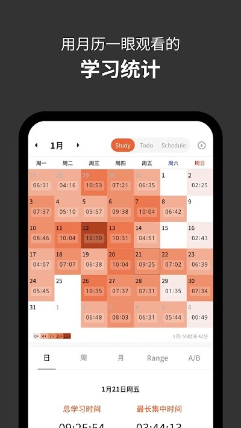
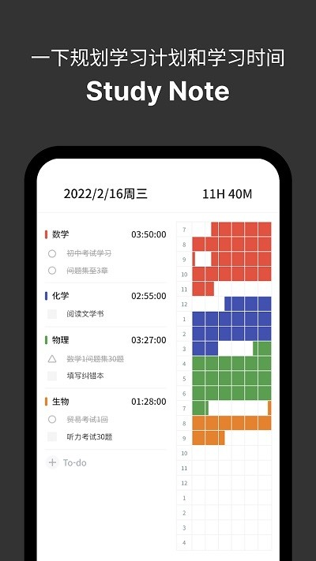

Yeolpumta 对比评测：当学习计时器开始管起你的同伴
用过 Forest、滴答清单、番茄ToDo 之后，为什么这款韩国开发者做的学习计时应用让我留下来？三个差异化能力、它付出的代价、以及什么样的人真正需要它。
学习计时器这个赛道说不上红海，但拥挤。Forest 靠种树视觉化沉浸感出圈了，滴答清单把番茄钟塞进了全能任务管理器里，番茄ToDo 和小日常们在应用商店里用"免费、简单、无广告"轮番轰炸。在这些名字都已经有口皆碑的类目里，Yeolpumta官网 是我用了快三个月才敢写评测的那一款——它不是最好用的计时器，但它是唯一一个让我觉得"这东西和我用过的都不太一样"的。
同类格局：它不抢 Forest 的用户
先给 Yeolpumta 定个位。这个类目里大致分两派：一派是 Forest 这种走"专注仪式感"的，用虚拟盆栽把计时过程包装成视觉享受，核心价值是让"坚持"这件事本身变得愉悦；另一派是滴答清单、Notion 时间块这种走"任务+计时"路线的，把计时嵌入工作流，核心价值是让数据和任务绑定，方便复盘。Yeolpumta 站在两派中间，但它真正想做的事只有一件——帮你看清自己的学习节奏。
它不跟 Forest 比视觉游戏（Yeolpumta 的界面就是干净的色块和数字，没有宠物、没有地图、没有成就系统），也不跟滴答清单比任务管理（它的 To-do 功能轻到几乎是计时的附属品）。它押注的是：如果你已经过了"用游戏让自己专心"的阶段，如果你真的在乎"我这周到底学了多少、分布在哪些科目、连续坚持了多久"，你需要的不是一个更花哨的计时器，而是一套能把学习数据翻来覆去看的工具。
差异化：三个别家没做透的点
可视化三件套，真的是"一眼看清"
Yeolpumta 的月历热力图我在别的计时器里也见过类似的，但做得这么彻底的少见。整个月的日历格按学习时长自动填色，七个等级的区间可以自定义——我把"4 小时以上"就定义成深色，这样每天差一个小时热力图就能反映出来，不会出现"今天学了 3 小时和学了 5 小时看起来一个颜色"的尴尬。点击任一天能弹出当日的科目分布、最长连续时段、关联的 To-do 完成情况，这些信息不用你自己去翻明细。

但真正让我觉得设计到位的是 Study Note 时间块图。每个科目一种颜色，横轴是时间从早到晚铺开，你启动了"数学"计时器跑两小时，Study Note 就自动在数学那一行画出两小时的色块。不需要手动创建或编辑，数据全来自计时器。周视图还能把七天叠在一起对比——我这才发现自己周一到周五的学习时段集中在晚上七点到十点，而周六不自觉会拖到下午才开始，这种节奏规律是单看时长数字看不出来的。
月历顶部的连续学习天数计数器也是个狠角色。很多应用都有连续打卡，但 Yeolpumta 允许你设"最低有效时长"——比如 30 分钟，当天学了不到半小时就不算入连续天数，杜绝了"打开计时器挂五分钟就走"来硬续天数的行为。这个细节让"连续天数"这个指标真的有意义，不是一个自欺欺人的数字游戏。

群聊唤醒：轻社交不做重 IM
Yeolpumta 的学习群组——从官方下载装完就能直接加入公开群组——是我见过最克制的群聊设计。它只支持文字消息和一个"唤醒"按钮，没有语音、没有图片、没有表情、没有语音通话——刻意砍掉一切可能变成分心源的东西。群主和管理员可以发群公告，固定显示在顶部，用来放群规、每日目标或者本周挑战，这些功能够用但不冗余。
"唤醒"是 Yeolpumta 群聊里最有意思的设计。找到群成员点一下头像旁的🔔，对方手机就会收到震动加通知横幅，内容是"XX 让你开始学习啦"。每天对同一人最多三次，不会骚扰。被唤醒的人如果已经在计时了，会收到"对方正在学习中"的提示——这个细节很贴心，不会让正在专注的人觉得被打扰。当然也可以屏蔽：关掉接收唤醒、只允许群主唤醒、或者设免打扰时段。
我一开始觉得这个功能有点傻——谁会需要别人催自己学习？但真用起来发现不是那么回事。考前冲刺那两周，我和群里两个研友互相设了"早上八点前必须开始计时"的约定，谁没开始另外两个就点唤醒。一个功能简单到不能再简单，但解决的是"一个人扛不住的时候有人踹你一脚"这个真实需求。
番茄钟节奏：从默认到自定义
Yeolpumta 的番茄钟没什么革命性，但它的参数自由度在同类里是少见的。默认是 25 分钟专注加 5 分钟休息，每 4 轮一个长休息，这是经典配置。但你可以把专注时长拉到 50 分钟、短休息调到 10 分钟、长休息 30 分钟、每 3 轮就触发一次——这些调整不用翻设置三层深的菜单，计时器页面顶部点一下番茄图标就能开关，要改参数路径也很清晰，完整的时长对照表在Yeolpumta文档里有更详细的说明。
休息期间的行为也可以单独设。默认是休息时段关闭干扰应用屏蔽（休息就是让你玩手机的），如果你想连休息都保持屏蔽，在设置里勾一下就行。番茄钟和普通计时的数据互相独立、各自统计——这意味着你可以早上用番茄钟刷网课，下午切换普通计时啃一道解两个小时的数学题，两种节奏互不干扰但都会进统计。
取舍：为这些优势付出了什么
Yeolpumta 最大的代价是上手门槛。Forest 打开就是一个倒计时，Yeolpumta 打开你得先添加科目、给每个科目选颜色、设定热力图等级区间、可能还要拉几个同伴建群——整个初始化流程下来少说十分钟。对于"我今天只想用十分钟专心背单词"这种场景，Forest 确实更快。
平台限制也是个问题。Yeolpumta 的官网信息显示它主要覆盖移动端，桌面端的功能有没有对齐我没确认，但至少从我用的版本来看，群聊唤醒、Study Note 时间块图这些核心功能在手机上的体验是最好的。如果你是那种大部分学习时间在电脑前、只需要一个浏览器插件的人，Yeolpumta 可能不是首选。
还有一点是功能定位的"不完整"。它的 To-do 真的很轻——没有子任务、没有优先级矩阵、没有依赖关系，就是一条条可以勾掉的事项。如果你想要的是一个从任务拆解到时间追踪到复盘分析全覆盖的全能工具，滴答清单或者 Notion 时间块会比 Yeolpumta 更完整。Yeolpumta 只做学习计时这一件事，做深，但不做广。
选购结论
什么样的人选 Yeolpumta？我觉得满足这三个条件里至少两个的人会留下来：第一，你有固定的学习节奏，不是偶尔开一次计时；第二，你真的在乎数据复盘，月底会愿意花十分钟扫一眼热力图看看自己哪几天摸鱼了；第三，你有两三个同伴，互相监督比一个人扛更有效。
如果你只想要一个界面好看、打开就能用的专注计时器，Forest 依然是更好的选择。如果你需要的是任务管理加计时的全能组合，滴答清单或者 Notion 时间块的生态更成熟。但如果你已经在这些工具之间转了一圈，觉得"我不缺一个计时器，我缺一个能帮我看清自己学习节奏的东西"，Yeolpumta 值得你把那十分钟初始化流程走完。
我个人的结论是：它不是同类里最好用的，但它是同类里最"懂"学习者的——懂一个人坚持不下去的时候需要什么，懂数据不是越多越好而是要看得懂，懂同伴压力有时候比自我激励管用。这套资料在GitHub、Gitee、GitCode 三个仓库都能拿到，感兴趣的话可以都翻一下不同版本的说明，选你觉得顺手的来。